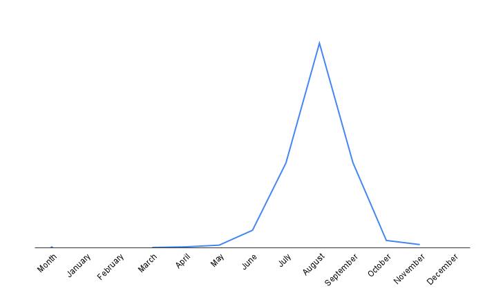

Melissodes agilis
Scientific Classification
Kingdom
Phylum
Class
Order
Family
Tribe
Genus
Subgenus
Species
Binomial Name
Melissodes agilis
Melissodes agilis Cresson, the agile long-horned bee, is by far the most abundant North American species of Melissodes (Laberge, 1961). Like all Melissodes, male M. agilis have long antennae, and the females have short antennae in comparison (see "Genus" page for more information). This species resides in, and is the type species of, the subgenus M. (Eumelissodes) Laberge. Both sexes of M. agilis can resemble other species in M. (Eumelissodes) Laberge, although the females can be somewhat easily distinguished by their red thoracic hairs, red to reddish brown wing veins, dulled galea, and ochraceous scopal hairs. Males can be distinguished from that of other M. (Eumelissodes) Laberge by their dulled galea, yellow maculate on mandibles and labrum, entirely yellow clypeaus, short first flagellar segment, pale ochraceous to red thoracic hairs, and hyaline tergal margins (see “Description and Identification” for more information on both sexes) (Laberge, 1961). M. agilis is seemingly an oligolege of the tribes Astereae and Heliantheae (Robertson, 1926), however, recent studies have shown that M. agilis was also a prolific pollinator of soybeans (Wheelock, 2014).
Description and Identification
Melissodes agilis are medium sized setacouse bees. Females range from 10 to 13 millimeters in length and 3.5 to 4.5 millimeters in width. Males are a bit smaller, only being about 9 to 12 millimeters in length and 3 to 4 millimeters in width. The female's first flagellar segment is on average 1.81 times the size of the second flagellar segment (standard deviation 0.027). The males are the opposite where the second flagellar segment is on average 7.37 times the size of the first flagellar segment (standard deviation 0.164). Female wing length is 3.46 millimeters on average (standard deviation 0.159 millimeters), and male wing length is 3.20 millimeters on average (standard deviation 0.217 millimeters). Females have an average of 13.45 hamuli (standard deviation 0.223), while males have an average of 11.65 (standard deviation 0.274) (Laberge, 1961).
Female
The integument is black, differing at the eyes which are a gray to bluish gray and rarely greenish or black with violet reflection; the wing membranes which are completely hyaline; the wing veins which are red to reddish brown; the apical half of the mandibles which are rufescent; the underside of flagellar segments 3-10 and often the apex of the second which are rufescent; the distitarsi which is also rufescent; the pterostigma which is yellow to red, and the tibial spurs that can appear yellow to a red. The clypeus has small regular punctures that are often round and separated by one to half the diameter of a puncture. The surface of the clypeus is dulled by coarse and regular reticular shagreening and often has a short median horizontal carina in the apical half. The clypeus slightly protrudes beyond the eyes in profile view, but by no more than half an eye’s width. The supraclypeal area is similar to that of the clypeus, but it’s often impunctate medially. The galeae is dulled above by dense and fine tessellation. The four maxillary palpal segments decrease in length from basal to apical in a ratio of about 4.5:3.5:3.3:1.0. The flattened lateral areas of the vertex have small round punctures that are separated on average by one to three diameters of a puncture. The surface of the vertex is dulled by irregular reticular shagreening. The mesoscutum is shiny and sparsely or not at all shagreened and has deep round punctures that are separated by one to half the diameter of a puncture. The large posteromedian area of the mesoscutum has punctures that tend to be slightly larger and more sparse. Punctures of the scutellum are similar to the punctures on the mesoscutum, but they are slightly more crowded. The metanotum is dulled by very fine reticular shagreening, and has punctures that are half the diameter of the punctures on the scutellum. The punctures are mostly separated by one to half the diameter of a puncture. The propodeum’s dorsal surface is reticulorugose and is especially coarse basally, and the posterior surface has coarse punctures except for the upper triangle. The lateral surfaces of the propodeum are similar to the posterior surface but the punctures are more crowded and the surfaces are dulled by dense regular tessellation. The mesepisternum’s lateral surface has punctures that are large, shallow, and separated mostly by half a puncture diameter or less. The surface is shiny and unshagreened or if so then finely (Laberge, 1961).
The first metasomal tergum’s basal three-fifths is dulled by fine tessellation and is slightly less punctate. The punctures are round, shallow, and separated mostly by one to two puncture diameters; punctures can extend to the apex at extreme sides. The apical area of the first tergum is impunctate with a shiny surface that is extremely finely reticulotransversely shagreened. The second tergum’s basal zone is shiny but has fine reticular shagreening and tiny round punctures that are separated by one to half a puncture diameter. The interband zone of the second tergum is dulled by reticulotransverse shagreening and has small irregular punctures that are separated by one to three puncture diameters; these punctures are sparser medially than in the lateral raised areas. The apical area of the second tergum has a moderately shiny surface that is dulled with fine reticulotransverse shagreening and is impunctate or if punctate then it has minute punctures that are no wider than the base of the hairs that arise from them. Each of these punctures are separated by two to four puncture diameters. Both terga 3 and 4 are similar to tergum 2, but the punctures of the interband zone are relatively more distinct and abundant, the apical zone is also smaller or absent. The pygidial plate is broadly, V-shaped, with a rounded apex (Laberge, 1961).
M. agilis has a somewhat small range of setal variation, the most common description of which follows. Facial and genal area hairs are pale ochraceous to yellow and the vertex is yellow to bright rufescent (the vertex will sometimes have brown hairs, if so, they are never abundant). The sides of the thorax are pale ochraceous, and the top is ochraceous to bright rufescent. The first tergum has long, ochraceous to yellow or slightly rufescent hairs basally and laterally, except for the apical area which is glabrous or has very sparse, small, appressed brown to yellow hairs basally and laterally. The second tergum’s white to yellow basal pubescent band is long and the interband zone has short, appressed to subappressed, relatively simple, white to pale hairs. The distal pale band of the second tergum is yellow to white, broad laterally (very rarely reaching apical margin) to narrow medially, and usually it’s narrowly interrupted medially. The apical area of the second tergum has relatively simple, appressed to subappressed, white to yellow hairs that obscure the surface, be it not entirely. The third tergum is similar to the second but the basal tomentum is dark brown as well as the hairs on the interband zone, the distal pale band isn’t interrupted, and the apical area is shorter. The fourth tergum is similar to the third, but the pale distal pubescent band reaches the apex across the entire tergum and occasionally has a minute apicomedial area of brown hairs. Terga 5 and 6 are dark brown except for white to yellow tufts of hair at extreme sides. The sterna is pale reddish brown at extreme sides, and darker reddish brown medially. The legs are pale white to yellow except for the fore tarsi and often middle basitarsi on their outer surfaces, which is brown; the fore and middle tibiae on the outer surfaces near the apices, which are brown; The apices of the outer surfaces of the hind basitarsi and often the areas on and surrounding the basitibial plates, which are brown; the inner surfaces of the hind basitarsi, which are red to reddish brown; and the scopal hairs, which are ochraceous to yellow (Laberge, 1961).
Male
The integument is black, differing at the eyes which are green to grey or greyish blue; the wing membranes, which are completely hyaline; the wing veins, which are yellow; the base of the mandibles, which are yellow to cream colored; the labrum, which is white or cream-colored and the apical margin of the labrum, which is brown, very rarely all brown; the flagellum, which is red to yellow below and dark red to brown above; the distitarsi, which is rufescent; the tegulae, which is usually testaceous and sometimes piceous; the apical margins of the terga, which are hyaline and colorless to yellow, although in some eastern individuals, it can be a translucent brown; and the tibial spurs that can appear yellow to white. The clypeus protrudes beyond the eye by about half the width of an eye in profile view. The first flagellar segment is about one-sixth to one-seventh the maximum length of the second segment (as stated above), and the penultimate segment is about three times as long (maximum) as it is wide (minimum). All flagellar segments do not have longitudinal lateral depressions. The four maxillary palpal segments decrease in length from basal to apical in a ratio of about 4:3:3:1. The remainder of the characteristics are the same as the female described above except as follows: the clypeus’ short surface is often moderately shiny; the mesepisternum’s surface is usually somewhat dulled by fine and irregular shagreening; the medial portion of the first tergum’s basal four-fifths to five-sixths has small punctures that are separated by one to three puncture diameters; the interband zone of terga 2 and 3’s surface is moderately shiny with reticular shagreening, and has slightly larger and more abundant punctures; the hyaline apical areas of terga 1 through 5 are shiny to moderately shiny with extremely fine reticulotransverse shagreening; the sterna’s surfaces are shiny to moderately shiny and usually have distinct regular reticular shagreening (Laberge, 1961).
The 7th sternum’s median plate is flat and lies in the normal ventral plane, not rotated sideways. The apicolateral angles of sternum 7 are rounded, the sternum briefly narrows into a short, broad neck, and has abundant short hairs ventrally. The membranous area between the inner edge of the lateral plate and the lower part of the median plate is almost completely obscured and appears as a thin line. The 8th sternum usually has one or two hairs apicomedially, and no apical hairs medially. The apicoventral tubercle of sternum 8 is unidentate, rounded apically, and slightly surpasses the apical margin medially. The gonostylus is less than two-thirds the length of the gonocoxite and is capitate. The ventral area of the gonostylus has short sparse hairs near the base, and no hairs laterally. The spatha is sinuate apically and about three times as wide as it is long. The penis valve’s dorsolateral lamella ends at the spatha and isn’t turned inward to form a tooth just in front of the spatha (Laberge, 1961).
M. agilis has a somewhat small range of setal variation, the most common description of which follows. Males generally appear lighter than their female counterparts. The hair is similar to that of the female differing at the vertex, which usually has no brown; the first tergum’s basal four-fifths to five-sixths has long pale hairs that are medially long enough to reach apical margin, although there are too few to completely obscure the apical area; the second tergum’s interband zone usually has abundant long pale suberect hairs, and the distal pale pubescent band of the second tergum isn’t usually interrupted medially and is often as long or longer than the apical area medially; terga 3-5 are similar to that of 2, but the tomentum of the basal zones are brown, interband zones are usually scattered with pale pubescence and suberect hairs, and the distal pale pubescent bands are progressively closer to the apical margin; terga 6 and 7 have long, white to ochracous, sometimes yellow, hairs. The sterna is pale to yellowish medially; and the legs are white or ochraceous besides for the inner surfaces of the basitarsi and often the distitarsi, which are yellow to reddish yellow (Laberge, 1961).
Location and Habitat
As stated above, M. agilis is the most common and widespread North American species of Melissodes. M. agilis can be found in every U.S. state, southern Canada, and Mexico (Fig. 1). Although previously stated by Laberge (1961) that M. agilis doesn’t occur in Florida, a recent collection by John Ascher (Discover Life, Ascher & Pickering, 2025) shows that the species may extend into that region (this datapoint is not plotted on Fig 1. because it is missing coordinates). M. agilis is uniform in distribution and the biggest morphological differences based on geography are the brightness of the yellow or red setal colors and body size. It has been documented that males from eastern parts of its range often have darker apical margins of the terga, and specimens, primarily females, from northern parts of its range tend to be paler or duller in setal color. However, these differences seem to gradually shift, making it hard to define a valid subspecies (Laberge, 1961). A 16 year bee-climate relationship study showed that phenological activities of M. agilis, especially in arid areas, relate to precipitation more than temperature (McLaughlin, et al., 2023). This further showed that M. agilis is very receptive and sensitive to precipitation, having one of the most shortened flight activity durations in response to high precipitation of all the bees in the study. In wetter years, peak activity of M. agilis was recorded to be earlier. This paired with the relatively short phenological window of the genus, and M. agilis’ floral specialization, may have significant effects on populations due to climate change (McLaughlin, et al., 2023).
Fig. 1 map showing and estimation for the know distribution for M. (Eumelissodes) agilis. Each point represents 1 or more occurrences; occurrences that don't have coordinates are not included. Data compiled from DiscoverLife, GBIF, and iNaturalist.
Fig. 2 A conceptually similar arrangement to that illustrated by Wilson & Carril, 2016 but was independently redrawn for this study with updated information. The x value is the month, and the y value is the number of observations.
Taxonomy and Phylogeny
M. agilis is the type species for the subgenus Eumelissodes and was originally described in 1878 by Ezra Townsend Cresson alongside M. aurigenia. In Cresson’s treatment, he provided descriptions of both male and female M. aurigenia based on twenty specimens, and only a male description of M. agilis based on six specimens. The distinction Cresson made between the two were in setal color, tergal apical margin color, and geographic range. Male M. agilis were observed to have "cinereous" pubescence on the terga and “broadly whitish” apical margins, whereas male M. aurigenia were observed to have “fluvo-ochraceous” to “ochraceous” pubescence on the terga and “pale testaceous” apical margins. The six M. agilis specimens examined were all collected in Belfrage, Texas, and the twenty M. aurigenia specimens examined were collected from a large distribution across the United States and southern Canada (Cresson, 1878). These geographic differentiations were likely why Cresson believed them to be separate species. In 1961, Laberge revised the genus Melissodes and treated M. agilis in his revision. The notable type material Laberge used for M. agilis was the lectotype of a male M. agilis, the allotype of a male M. aurigenia, and the lectotype of a female M. aurigenia (Laberge, 1961). It is reasonable to assume that a verbatim holotype “female M. agilis” was not found, hence why Cresson was only able to describe a male M. agilis and Laberge used a “female M. aurigenia” in his revision. Laberge found that the distinctions Cresson made based on color and distribution were actually individual-to-individual intraspecific variations, and not a clear-cut separate species (Laberge, 1961). Based on the code outlined by the International Commission on Zoological Nomenclature, section 24.2.2 states that if two or more names based on the same type that are published on the same date (i.e. M. agilis and M. aurigenia), the precedence of the names are fixed by the first revisor (i.e. Laberge). So, in putting male and female M. aurigenia in type materials for M. agilis, Laberge effectively synonymized the two, giving senior synonym status to M. agilis, and junior synonym status to M. aurigenia (Ride, W.D.L. et al. (eds.), 2012).
Literature Cited
1. Robertson, C. (1926) ‘Revised list of Oligolectic Bees’,
Ecology, 7(3), pp. 378–380. doi:10.2307/1929320.
2. LaBerge, W.E. (1961) ‘A revision of the bees of the genus melissodes in north and Central America.
part III (hymenoptera, Apidae)’, The University of Kansas science bulletin, 42(5), pp. 283–663.
doi:10.5962/bhl.part.9821.
3. Wheelock, M.J. (2014) Insect pollinators
in corn and soybean agricultural fields. thesis. Iowa State University.
4. Ascher, J. and Pickering, J. (no date) Discover
life, Discover Life. Available at: www.discoverlife.org
(Accessed: 12 October 2025).
5. Melissodes agilis Cresson, 1879 in GBIF Secretariat (2023).
GBIF Backbone Taxonomy. Checklist dataset
doi.org/10.15468/39omei accessed via GBIF.org on 2025-10-12.
6. Observations (no date) iNaturalist. Available at:
www.inaturalist.org/observations?taxon_id=52780 (Accessed: 12 October 2025).
7. McLaughlin, Jade Elijah and Jade McLaughlin. "Phenological Activities of Desert Bees Track Rainfall
More Than Temperature and Predict Temporal Abundance Trends Over 16 Years." (2023).
digitalrepository.unm.edu/biol_etds/568
8. Cresson E.T. Descriptions of New Species of North American Bees. Proceedings
of the Academy of Natural sciences of Philadelphia, 30, 204–215.
9. Ride, W.D.L. et al. (eds.) (2012) Article 24. Precedence between simultaneously
published names, spellings or acts, International code of zoological nomenclature.
Available at: code.iczn.org/validity-of-names-and-nomenclatural-acts/article-24-
precedence-between-simultaneously-published-names-spellings-or-acts/?frame=1 (Accessed: 19 October 2025).